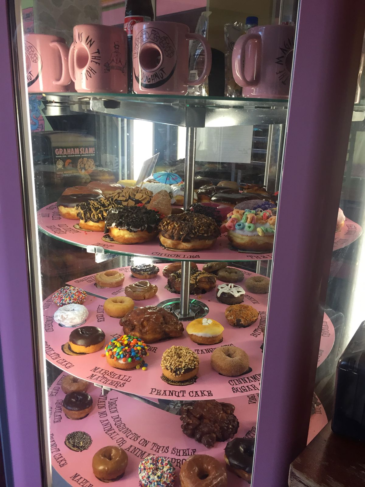
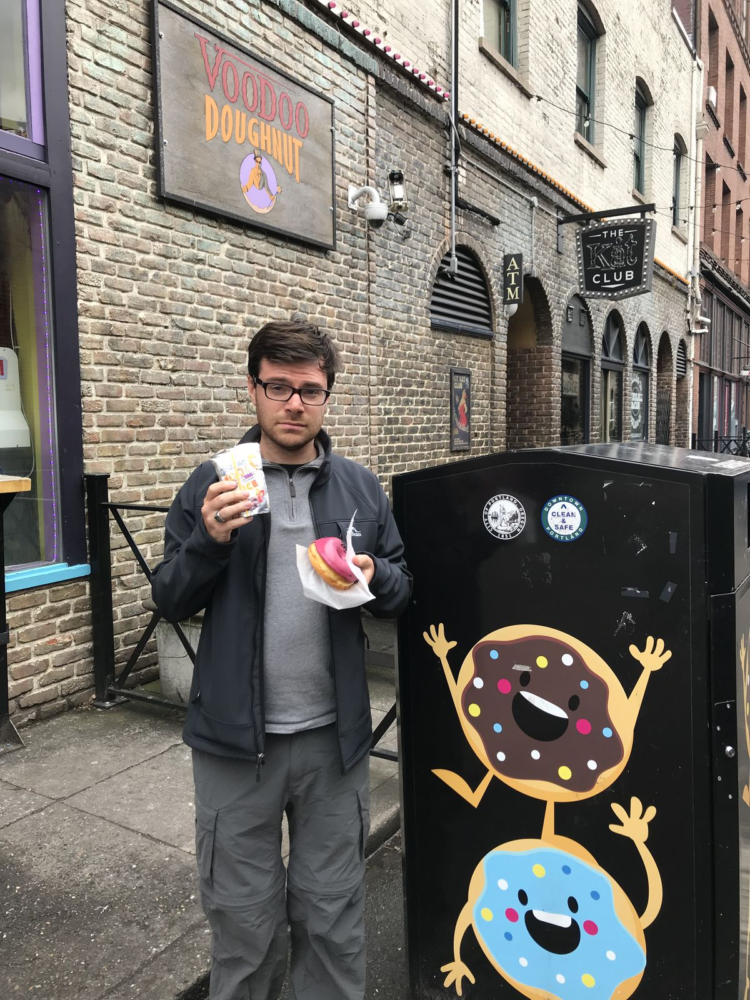

Voodoo Doughnut
Today I did all sorts of things Portland, one of them being visiting Voodoo Doughnut. They had all sorts of cake, unfilled raised, and filled raised donuts. The line was nearly out the door, so I had some time to make my selection: vicious hibiscus. It's an unfilled raised donuts with a hibiscus glaze and chocolate sprinkles. The donut was great and not too greasy.
It's clear that they take great pride in their work as donut slingers. They have two slogans. "The magic is in the hole", describing how magically delicious the donuts are. The other, "good things come in pink boxes", describes the colorful pink boxes that hold a dozen donuts. Here, of course, the donuts are the good things. What a fun, happy, family-friendly establishment. Don't think too hard about it.

